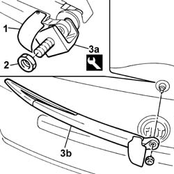

5050C34 rear wiper arm with blade - r+r
- Path
- Procedures > 50 AUXILIARY UNITS > 5050 SCREEN WASHERS AND HEADLAMP WASH/WIPE > 5050C rear wash/wipe > 5050C34 rear wiper arm with blade - r+r
- Kind
- repair procedure (removal / refitting; the operation number is the code)
- Applies to
- all engines; all production periods
- Interactive page
- https://sloeber94.github.io/elrnDB-fPnd/en/#/2752921
Applies to: all engines; all production periods
 Removing
Removing
 Refitting
Refitting1. Open the cover.
2. Unscrew the retaining nut.
3. Using the tool (3a) remove the window wiper arm complete with blade (3b).
 | Name | Country |
|---|---|---|
3a | Extractor | 1.870.717.000 |

Applies to: all engines; all production periods
Refitting
RemovingFit the wiper arm complete with blade and tighten the nut to the specified torque.
 | Fastening | Component | Ø | Value (daNm) |
|---|---|---|---|---|
- | Nut | REAR SCREEN WIPER ARM | M8 | 1.6 |
Close the cover.